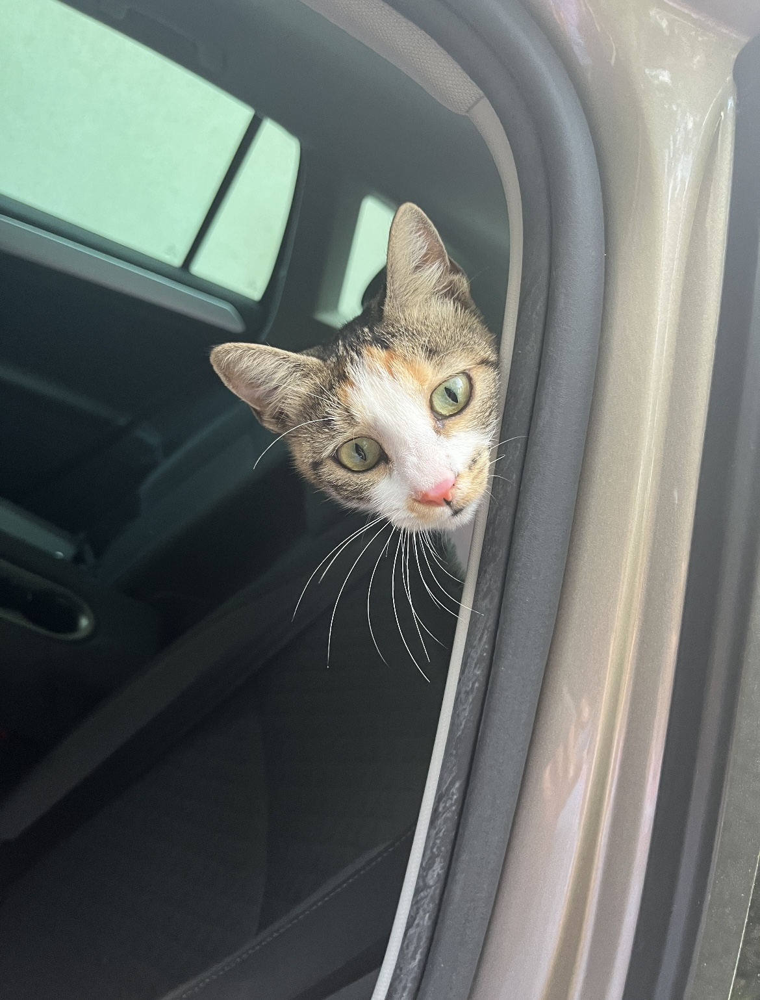

MY BIOGRAPHY
Hi! I am Mili and I am a calico cat. I am almost three years old and I live at my house with another cat of my species.
I usually spend my day in the garden, hiding between the flowers looking for prey, chasing anything that seems to be a threat, or sleeping.
I enjoy relaxing on the veranda, and posing for the humans that like to take pictures of me. I am especially friendly and usually I accept cuddles even from guests.
AWARDS FOR:
- best camouflage
- greatest fear of rain
- most dramatic cat
- curtain tailor of the year
my routine
what i ilke to do:
- hunting birds and lizards in the wilderness of our garden
- climbing tall trees and enjoying the views from there
- napping in my comfortable basket for at least 12hours per day
- eat
- meow loudly when i want attention
- chase the bees around the flowers
- playing with ribbons
- destroying the curtains inside the house
- hiding in tote bags and boxes
- biting the laces of sneakers
- stretching and yawning after a long and tiring day
- sharpen my nails on the mat of the front door
professional cat activities